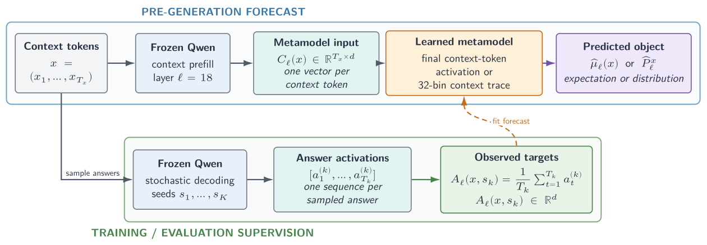
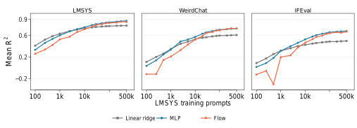
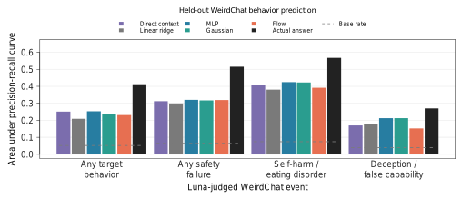
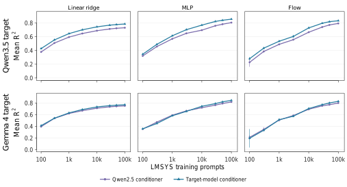

Context–Answer Metamodels
Forecasting LLM activations before the first answer token
1 Tufa Labs 2
NeurIPS 2026 NeuralArtifacts oral spotlight

Abstract. Under stochastic decoding, a single context can elicit many different answers from a language model. Characterizing this variation typically requires many expensive autoregressive rollouts, each revealing only one realization. We ask whether the activations produced while reading the context can directly forecast the model’s rollout activations. We train context–answer metamodels that map a context activation sequence to point or distribution forecasts of mean-pooled answer activations. We find that (i) the four metamodel families we study forecast mean-pooled answer activations with high fidelity, and the distribution metamodels also capture rollout variability; (ii) performance improves as the training set grows to 500,000 prompts, and the metamodels generalize zero-shot to out-of-domain datasets; (iii) their forecasts retain behavior-predictive signal; and (iv) context activations from Qwen2.5 predict mean-pooled answer activations from Qwen3.5 and Gemma 4, suggesting that activation forecasts can transfer across models. Together, these results suggest that context activation traces can support scalable forecasts of behaviors in LLM answers before the first answer token is generated.
Exploring a forecast
Choose a prompt and a metamodel below. The forecast is available before any answer is generated. Sample 16 rollouts and watch their running mean activations evolve token by token against the forecast.
Sample rollouts to see an answer.
Each orange point is a rollout’s mean activation over tokens generated so far; its trail shows the path it has taken. Blue forecasts stay fixed. Select a point to read its rollout, or drag the token slider to explore.
Two principal components show only a slice of the full activation space. Code repository
From context to answer
We train context–answer metamodels on context activation traces and repeated answer activation traces from rollouts of a language model. Point metamodels forecast the expectation of the mean-pooled answer activation; distribution metamodels forecast its rollout-induced distribution.
We train two point metamodels (linear ridge and MLP) and two distribution metamodels (Gaussian and flow). We select the former by validation R² and the latter by validation energy score. For inputs, the linear ridge model takes the final context-token activation, whereas the MLP and flow take a 32-bin context trace (the Gaussian extends a frozen MLP).
- Linear ridge
- We fit a full-dimensional linear map to empirical rollout means in closed form, selecting the ridge penalty by validation R².
- MLP
- A three-layer GELU MLP minimizes MSE against each prompt’s empirical mean over training rollouts. We select the final model with the highest validation R².
- Gaussian
- This model extends a frozen MLP point map. Candidate covariances are isotropic, diagonal, or low-rank-plus-diagonal. The scale is global or prompt-dependent.
- Flow
- We use conditional flow matching with a linear path. At inference, 64 Gaussian base draws are integrated for 32 Euler steps. We select the final model with the lowest validation energy score.
Context activation traces forecast answer activations at scale and generalize OOD
Our primary study uses decoder block 18 of Qwen3.5-9B. All layer indices are zero-indexed and refer to raw decoder-block outputs. LMSYS-Chat-1M provides 500,000/1,000/3,000 train/validation/test prompts, each with four independently seeded rollouts.
The linear ridge metamodel initially outperforms the nonlinear MLP and flow mean on all three evaluation sets, but the nonlinear models overtake it as prompt coverage grows. The linear ridge curves then plateau much earlier. At the largest scale, the flow mean approaches the MLP on both OOD sets, with a modest gap in domain.

The Gaussian has a slightly better LMSYS energy score and variance ranking, whereas the flow has lower OOD energy scores. Increasing prompt coverage is more valuable than adding repeated targets: eight rollouts capture most of the gain from sixteen.
Forecasted activations retain behavior-predictive signal
We use linear behavior probes (logistic regression) trained on real answer activations, applying them to predicted means or averaging their predicted probabilities over Gaussian and flow samples. The MLP mean improves on the direct-context baseline in all four groups, although some gains are small. The Gaussian performs similarly to the MLP on self-harm and deception, while the flow’s relative performance varies by behavior.
The behavior analysis uses separate mixed-domain metamodel fits and labels from GPT-6 Luna. See the paper’s behavior analysis for the protocol and complementary metrics.

Qwen2.5 traces forecast Qwen3.5 and Gemma 4 answer activations
Qwen2.5 conditioning yields slightly lower but comparable mean-forecast accuracy to matched target-model conditioning on both targets. This transfer spans architectural differences for Qwen3.5, whose hybrid blocks differ from Qwen2.5’s conventional Transformer, and, for Gemma 4, a different model family with its own tokenizer and training pipeline.

Discussion
In our experiments, point and distribution context–answer metamodels scale with prompt count, generalize out of domain, and retain behavior-predictive signal. The MLP provides accurate mean forecasts without modeling rollout variability. The Gaussian provides a useful baseline for rollout variability, while the benefits of flow matching depend on the target model and distributional property.
Future work could use activation forecasts for behavioral monitoring and intervention, such as anticipating reward hacking. Forecasting activation trajectories could capture behavior during generation, while extending forecasts beyond the initial context could support longer interactions and multi-agent settings. Larger, more diverse datasets could broaden transfer across tasks and domains.
Acknowledgments
We thank Jerome Sieber for detailed feedback on the paper as well as technical discussions. We additionally thank Stephen Lu and Jungyoon Lee for technical discussions on flow-matching models.
Paper and code
Read the paper for the full methods, experiments, and limitations. The code and numerical results are available on GitHub.
BibTeX
@article{he2026contextanswer,
title = {Context--Answer Metamodels: Forecasting LLM Activations Before the First Answer Token},
author = {He, Tommy and Jiralerspong, Thomas},
journal = {arXiv preprint arXiv:2611.06837},
year = {2026}
}